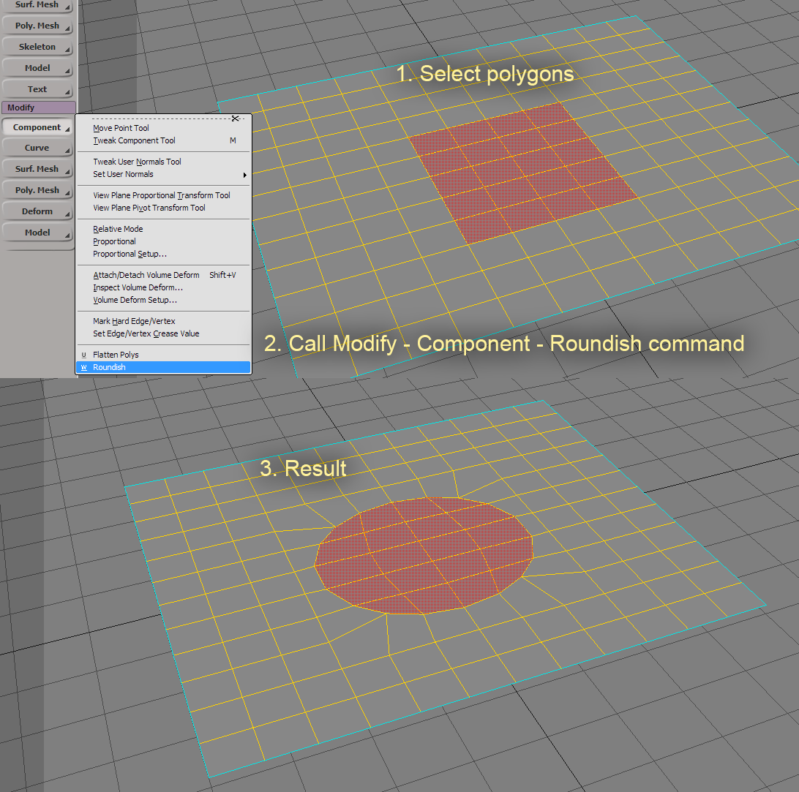

Roundish
Last update: 08.04.2017
Description: This is a very basic Python script for deforming selected polygons of the polygonal mesh to the circular shape.
Download: plugin file
How to install: Copy downloaded py-file to C:\Users\UserName\Autodesk\SoftimageVersion\Application\Plugins directory or to another Application\Plugins directory in any workgroup.
How to use: 
Video with old version, but works in the same way.